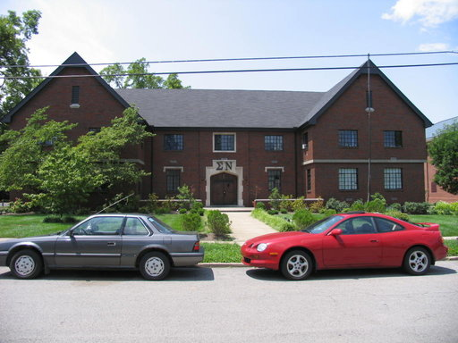

Sigma Nu

Nickname: Sig Nu
President: George Sorensen | 630-991-0101 | sorensen.george@gmail.com
Recruitment: Jared Taylor | 502-649-5058 | jared.taylor@uky.edu
45 Members
GPA: 3.2
Address: 422 Rose Lane, Lexington KY 40508
Chapter History:
Originally chartered at the University of Kentucky in 1902, the Gamma Iota
Chapter of Sigma Nu has been part of the long standing excellence of UK for
over 100 years. Since being re-founded as a colony in the spring of 2013,
we've made great progress in returning Sigma Nu's strongly held traditions of
personal growth, professionalism, service and brotherhood as well as
establishing a place back in the fraternal community and with the university.
In that time we've worked tirelessly on developing a petition to charter in
the coming fall and to become involved in philanthropy here at UK. In pursuing
a charter we've created a well-established organization of leaders that keeps
growing thanks to the original Sigma Nu Leadership Ethics Achievement and
Development (LEAD) program, maintaining the philosophy that one can always
be a better leader. Additionally we've created a standard of self-discipline
which includes emphasis on grades and personal conduct. In fact, in the spring
of 2014, Gamma Iota was ranked third in GPA out of the entirety of UK men's
fraternities. Our philanthropic involvement keeps growing as well. This past
year Sigma Nu was proud to be part of the advent of two philanthropy
events: The Sigma Nu/AGD/ROTC Combat Crawl in the fall and The Sigma Nu/Pi
Phi Dodgefather dodge ball tournament in the spring. Sigma Nu at the
University of Kentucky has very high prospects for the future. Nowhere else
can you find a brotherhood as strong, loyal, or as worthy of a lifetime
commitment. Sigma Nu looks forward to continuing its legacy of always
excelling with honor and evolving men into great leaders who live their
lives with love, honor, and truth.
Founding Fathers:
James Frank Hopkins,
James Mclvein Riley
Greenfield Quarles
National Founding Date: January 1st, 1869